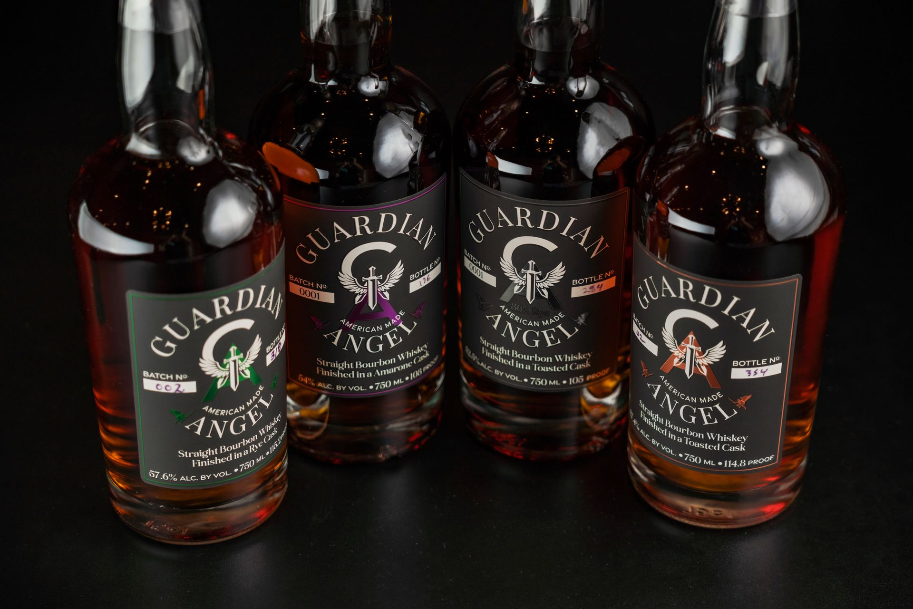
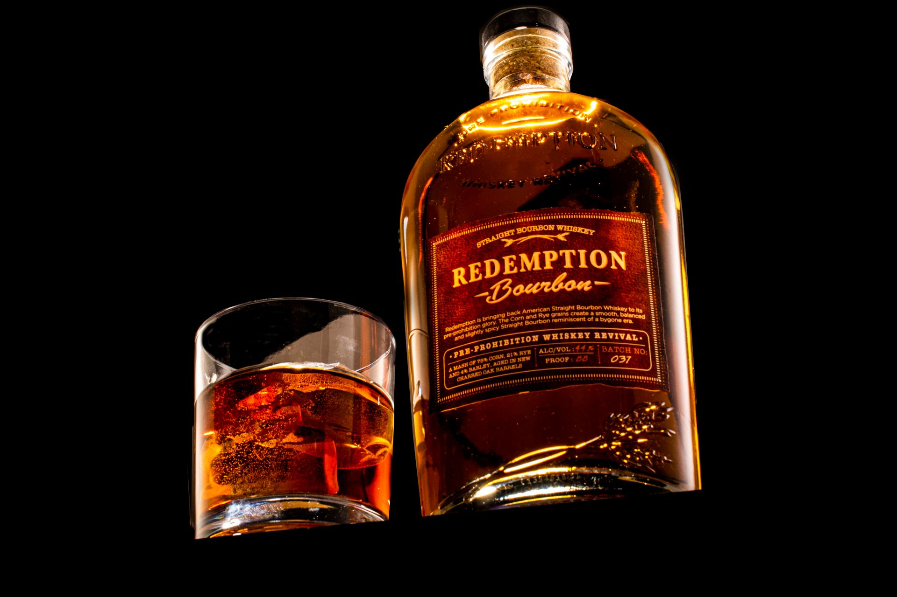
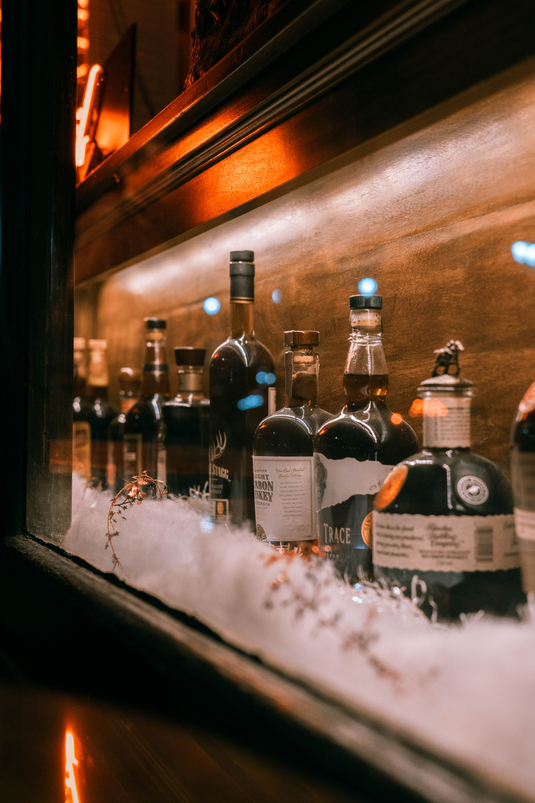

The whiskey investment world splits into two camps: bottle collectors and cask investors. They buy different things, face different risks, earn different returns, and — this is the part nobody tells beginners — require completely different temperaments.

Here's the honest comparison.
What it is: Buying bottled whiskey — typically limited editions, aged statements, or discontinued expressions — and holding for appreciation.
Entry cost: $200–$2,000 per bottle for serious investment-grade stock. You can start with $1,000 and five carefully chosen bottles.
How returns work: Scarcity-driven appreciation. Limited supply + growing demand + time = price increases. The mechanism is simple and proven — it's the same dynamic as art, wine, or vintage cars.
Typical returns: 8–15% annually for well-chosen bottles over 5–10 year holds. Top performers (Karuizawa, Macallan 1926, Pappy 23) have done far better. Mediocre picks have gone sideways or declined.
Advantages:
Disadvantages:
What it is: Buying a full cask (barrel) of new-make spirit from a distillery and holding it as it ages, then selling the matured whisky — either as a cask to a bottler or bottled under your own label.
Entry cost: $5,000–$15,000 for a Scotch hogshead of new-make spirit. Premium distilleries (Macallan, Springbank) command $15,000–$30,000+. Japanese casks: $10,000–$25,000. You're also paying annual storage and insurance: $200–$500/year per cask.
How returns work: Two engines — maturation (the whisky gets better and more valuable as it ages) and scarcity (your specific cask becomes one of fewer remaining from its vintage). After 10–15 years, a well-chosen cask can be worth 3–5x the initial investment.
Typical returns: 10–18% annually for successful cask investments over 10–15 years. But the variance is enormous, and the failure modes are real.
Advantages:
Disadvantages:
Cask investing has a fraud problem that bottle investing doesn't. The pitch — "buy a cask of Macallan, it can only go up!" — has attracted operators ranging from optimistic to criminal.
Red flags:
Legitimate cask brokers exist — Braeburn Whisky, Mark Littler, and others operate transparently with warehouse verification. But the space requires more due diligence than bottles.
Choose bottles if: You're starting with under $10,000. You enjoy the collecting aspect. You want flexibility to sell individual positions. You might want to drink some of it. Your time horizon is 3–10 years.
Choose casks if: You have $25,000+ to commit. You're comfortable with 10–15 year illiquidity. You've done distillery-level research. You understand bonded warehouse logistics. The idea of owning your own cask genuinely excites you (it should — otherwise the hassle isn't worth it).
Do both if: You're serious about whiskey as an alternative asset. Bottles for liquidity and enjoyment; casks for long-term appreciation. The barbell approach works here as it does in portfolio construction.
"The best whiskey investment is the one you understand well enough to explain to a skeptic. If you can't articulate why this specific bottle or cask will be worth more in ten years, you don't have an investment thesis — you have a hope."
Both strategies work for informed investors and punish the careless. Bottles offer lower friction and more enjoyment; casks offer higher ceilings and more complexity. Neither is passive. The whiskey market rewards the same thing every alternative asset market rewards: deep knowledge, patience, and the discipline to buy quality when others are chasing hype.
Fixed price. Clean transfer through Escrow.com. Confidential inquiry.

Macallan, Pappy, Yamazaki, and Karuizawa keep climbing — but the 2021–22 boom left a correction zone. Auction data on what rare whiskey is actually worth in 2026.
Read →
Why a $300 bottle sells for $4,500: genuine scarcity, the Bourdain effect, trophy culture, and what blind tastings actually reveal about what’s in the glass.
Read →